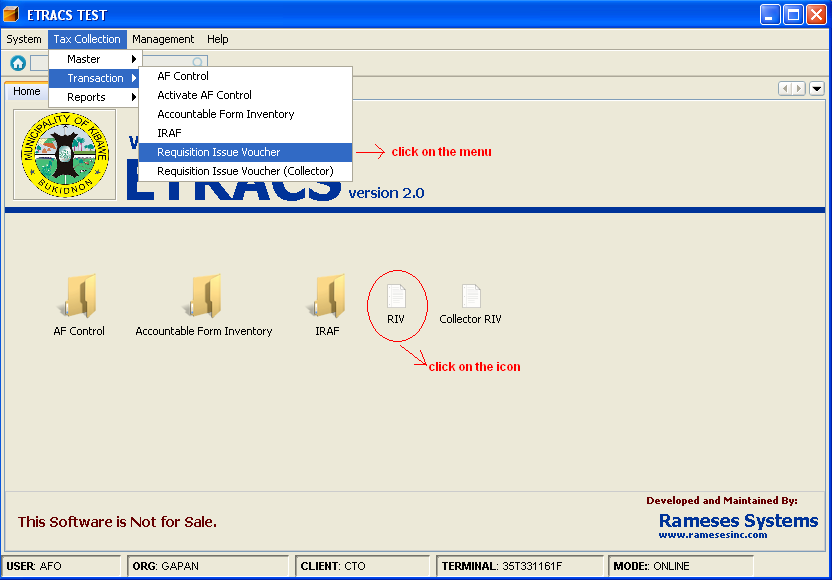
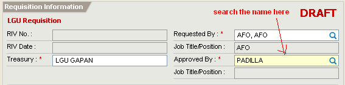
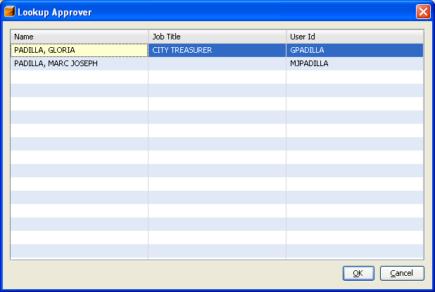
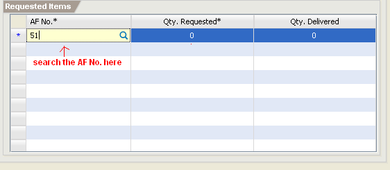
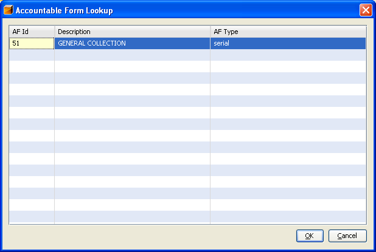
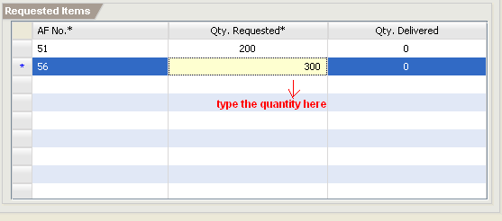
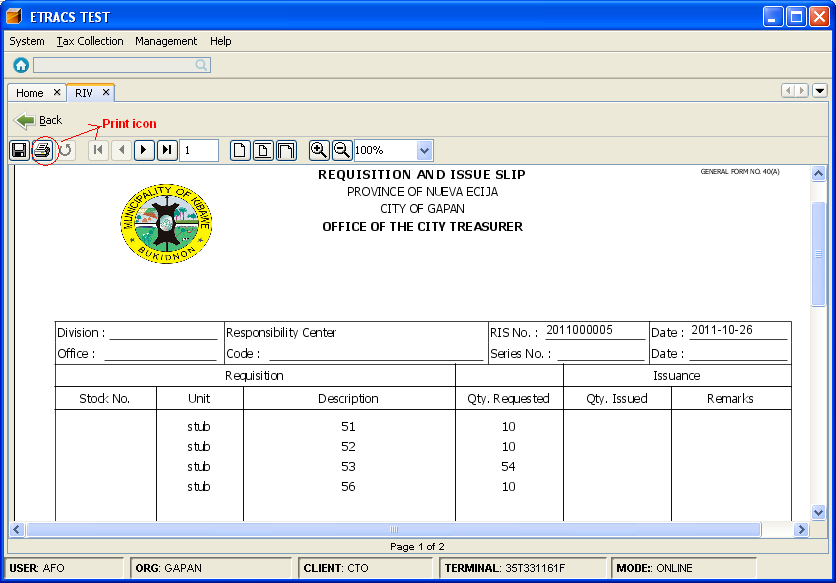
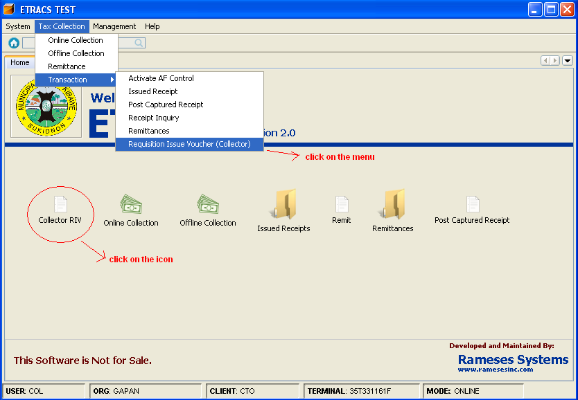
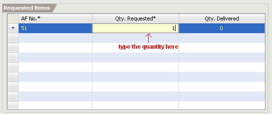
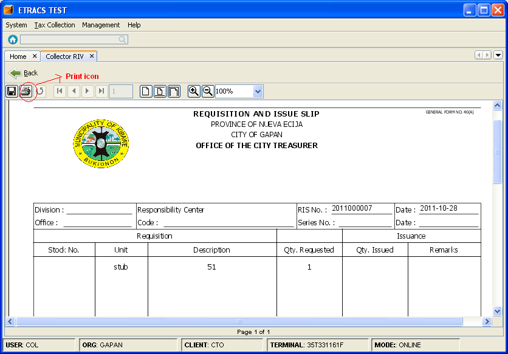

Requesting an Accountable Forms
This facilities enable you to request accountable forms.
How to request an accountable forms? (For AFO)
1. On the menu toolbar, go to "Tax Collection -> Transaction -> Requisition Issue Voucher" item.
You can also click on the "RIV" icon from the home page

2. Click on the "New" button.
3. Search the approver's name. You can type the approver's lastname, and press [Enter] to search the name.

4.Select the approver's name from the list, and click on the "OK" button or press [Enter].

5. Type the AF number under the AF No. column, and press [Enter].

6. Select the accountable form from the list, and click on the "OK" button or press [Enter].

7. Specify the quantity requested (number of stub requested).

8. Click on the "Save" button to save the request.
9. Click on the "Approve" button to post the request.
10. Click on the “View RIS button to view the request form.
11. Click on the "Print" icon to print the request form.

How to request an accountable forms? (For Collector)
1. On the menu toolbar, go to "Tax Collection -> Transaction -> Requisition Issue Voucher (Collector)" item.
You can also click on the "Collector RIV" icon from the home page

2. Click on the "New" button.
3. Type the AF number under the AF No. column, and press [Enter].
6. Select the accountable form from the list, and click on the "OK" button or press [Enter].
7. Specify the quantity requested (number of stub requested).

8. Click on the "Save" button to save the request.
9. Click on the "Approve" button to post the request.
10. Click on the “View RIS button to view the request form.
11. Click on the "Print" icon to print the request form.
